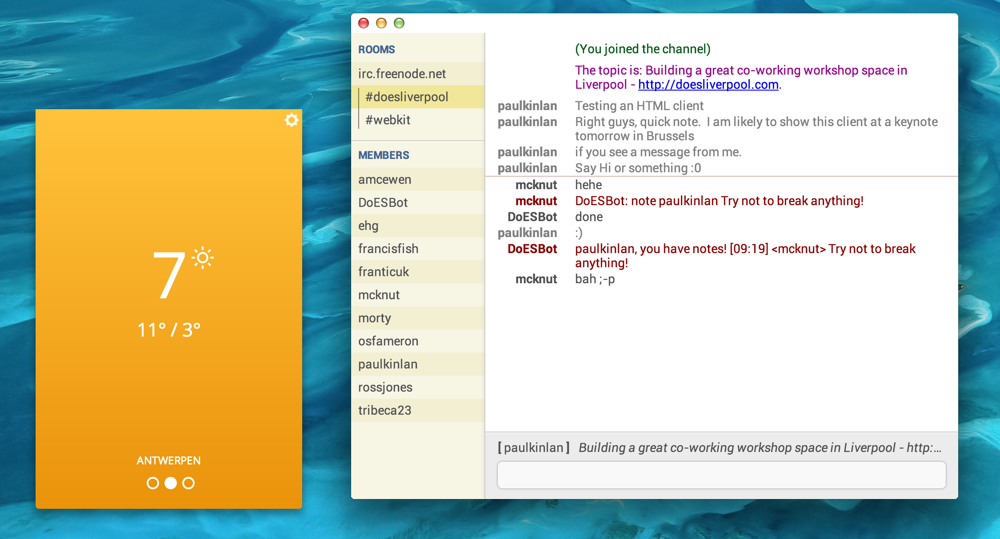

Chrome

6 Minutes to show you why it is awesome to be a Web developer
> 1 billion users have modern browsers*
73% of the web use HTML5 enabled browsers
Chrome + Firefox + IE9/10 + Safari + Opera + Android + iOS
gs.statcounter.com/#browser_version-ww-monthly-201210-201210-bar
Astounding pace of innovation
Chromium
50372
Commits
WebKit
31492
Commits
V8
2961
Commits
Awesome in Action
Android + iOS
- Tab Sync
- Prefetching
- Remote Debugging tools on Android
Launched Web Lab
Launched JAM with Chrome
New Features
Making your Jobs easier
Get User Media
window.navigator.webkitGetUserMedia({audio: true, video: true},
function(stream) {
var url = URL.createObjectURL(stream);
video.src = url;
});
Process Audio input
Apply Style with CSS Filters
video.cssfilter {
animation: anim 2s infinite alternate;
}
@-webkit-keyframes anim {
0% {
filter: blur(0px) grayscale(0);
}
50% {
filter: blur(3px) grayscale(0.5);
}
100% {
filter: blur(6px) grayscale(1);
}
}CSS Shaders
.target {
transition: all 2000ms;
filter: custom(url(demo5.v) mix(url(demo5.f) normal source-atop),
40 40,
time 0,
transform perspective(600));
}
.target:hover {
filter: custom(url(demo5.v) mix(url(demo5.filter) normal source-atop),
40 40,
time 2,
transform perspective(600) rotateX(35deg) scale(0.8));
}Now for something more awesome.
A New Platform
Apps should
- work offline by default
- look and feel native
- be able to access devices
- look and feel native
be built with tech that we know and love
- HTML
- Javascript
- and CSS3
We can do that with Chrome Apps
Markdown Demo
Using Browserify
onload = function() {
var mdEl = document.getElementById("markdown");
var htmlEl = document.getElementById("html");
var md = require( "markdown" ).markdown;
mdEl.onkeypress = function() {
var output = md.toHTML( mdEl.value );
htmlEl.innerHTML = output;
};
};$ browserify -r markdown -o bundle.jsNode APIs in the Browser
Browserify + Chrome Mapping = WIN
https://github.com/iceddev/http-chromify powered by Browserify Chromevar http = require('http');
http.createServer(function (req, res) {
res.writeHead(200, {'Content-Type': 'text/plain'});
res.end('Hello World\n');
}).listen(1337, '127.0.0.1');
console.log('Server running at http://127.0.0.1:1337/');